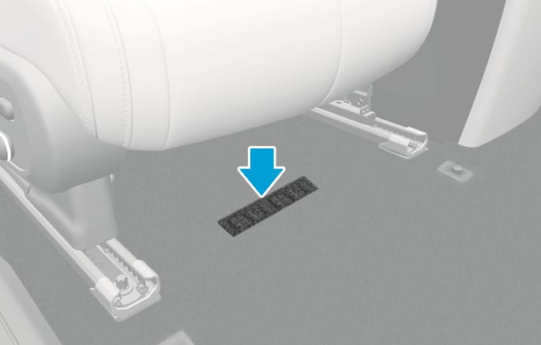

차대번호(VIN)

2C_VINPosition
차대번호(Vehicle Identification Number)는 차량의 등록, 이전 등 법적 절차에 필요한 고유 번호로, 동승석 바닥의 커버를 열고 확인할 수 있습니다.
-
차체에 새겨진 차대번호는 차량 등록증의 차대번호와 일치해야 합니다.

2C_VINPosition
차대번호(Vehicle Identification Number)는 차량의 등록, 이전 등 법적 절차에 필요한 고유 번호로, 동승석 바닥의 커버를 열고 확인할 수 있습니다.
차체에 새겨진 차대번호는 차량 등록증의 차대번호와 일치해야 합니다.